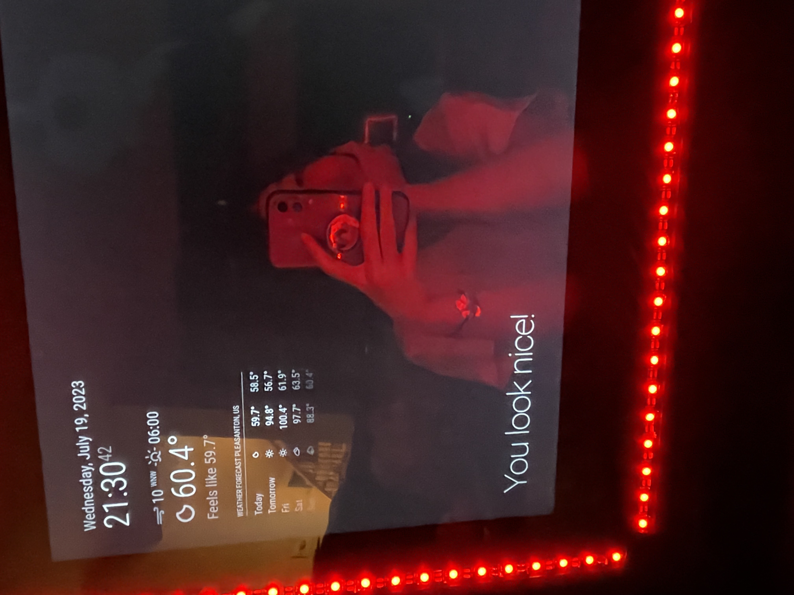

Lightspeed
A Reaction Time Game
Inspired by Batak, Lightspeed is a high-speed reaction game where the player must hit illuminated buttons as fast as possible. Batak usually features a full-body board with eight buttons to hit. This board’s utility has a diverse audience–from athletes in Formula 1 and football training their reaction time to finding its use within parties and exhibitions. Our rendition capitalizes on the original board’s physical interactive nature and friendly competition while making the board smaller, portable, and with a lot more color.

Magic Mirror
The Magic Mirror is a mirror that displays and self-updates with widgets of information. Taken from my to-do list, weather, and calendar, the concept originates from being able to get up and ready while seeing a day’s information at a glance, consolidated all onto one screen.